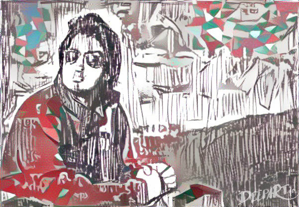

Sailik Sengupta
Senior Scientist · AWS AI Labs · LLM Alignment & Decoding
Curriculum Vitae
Google Scholar
GitHub
LinkedIn
Twitter / X
Instagram

portrait
Style-transferring a
Feluda
cover onto his portrait at the
Golden Gate Bridge
.
Loading…